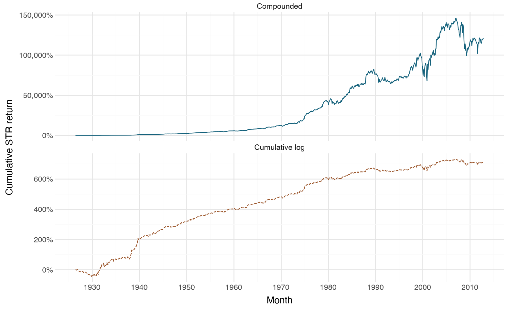

import polars as pl
from era_pl import load_parquet
from eap_pl import build_book_to_market, build_momentum, build_sizes, monthly_panel
first = pl.date(1963, 6, 1)
last = pl.date(2012, 11, 1)
keys = ["permno", "month"]
lag_labels = {"rev": "Rev", **{f"lag{k}": f"R(t−{k})" for k in range(1, 12)}}
stock_returns = (
load_parquet("msf", "crsp")
.filter(pl.col("date").is_between(first.dt.offset_by("-11mo"), last.dt.month_end()))
.select(
"permno", month=pl.col("date").dt.month_start(),
rev=pl.when(pl.col("ret").is_finite()).then(100 * pl.col("ret")),
)
)
sizes = build_sizes()
book_to_market = build_book_to_market(sizes).select(*keys, "bm")
panel = (
monthly_panel(sizes, first, last).lazy()
.join(book_to_market.lazy(), on=keys, how="left", validate="1:1")
.join(build_momentum(first, last).select(*keys, "mom").lazy(),
on=keys, how="left", validate="1:1")
.join(stock_returns, on=keys, how="left", validate="1:1")
)
for k in range(1, 12):
lagged = stock_returns.select(
"permno", month=pl.col("month").dt.offset_by(f"{k}mo"), **{f"lag{k}": pl.col("rev")},
).filter(pl.col("month").is_between(first, last))
panel = panel.join(lagged, on=keys, how="left", validate="1:1")
panel = panel.collect()12 Short-Term Reversal
Do stocks that rose last month continue to outperform, or do they give back some of their gains? Following Chapter 12 of Bali et al. (2016), we sort on the most recent monthly return and compare its predictive power with that of earlier returns. This complements Chapter 11, where the main momentum signal skips the formation month.
12.1 Measuring Short-Term Reversal
In BEM’s Equation (12.1), the reversal signal is the formation-month CRSP stock return in percentage points.
\[ \operatorname{Rev}_{i,t}=100 R_{i,t}. \tag{12.1}\]
Here \(R_{i,t}\) is the decimal return for stock \(i\) in month \(t\). Earlier returns are also expressed in percentage points and matched by calendar month, so a gap in the CRSP file does not make an older observation count as the previous month’s return. The formation sample runs from June 1963 through November 2012, and the outcome is the following month’s excess return, including the delisting treatment in Section 7.2.
12.2 Summary Statistics and Correlations
We compute the cross-sectional statistics each month and average them over time. For Pearson correlations, we winsorize the paired observations at 0.5% in each tail. Spearman correlations use the original ranks.
from eap_pl import mean_cross_sections
show_table(mean_cross_sections(panel, {"rev": "Rev"}))| Measure | Mean | SD | Skew | Kurt. | Min | 5% | 25% | Median | 75% | 95% | Max | n |
|---|---|---|---|---|---|---|---|---|---|---|---|---|
| Rev | 1.21 | 15.49 | 3.11 | 59.52 | -67.35 | -18.93 | -6.27 | 0.06 | 6.92 | 24.20 | 266.45 | 4748 |
from eap_pl import period_correlations
controls = {"beta": "Beta", "log_cap": "Size", "bm": "BM", "mom": "Mom"}
correlations = (
period_correlations(panel, ["rev", *controls], "month")
.select(pl.exclude("month").mean())
.row(0, named=True)
)
show_table(pl.DataFrame([
{"Method": method, **{label: correlations[f"{method} rev–{term}"]
for term, label in controls.items()}}
for method in ("Pearson", "Spearman")
]))| Method | Beta | Size | BM | Mom |
|---|---|---|---|---|
| Pearson | -0.02 | 0.07 | 0.02 | 0.02 |
| Spearman | -0.01 | 0.11 | 0.03 | 0.04 |
The average monthly mean and standard deviation are 1.21% and 15.49%, matching BEM to two decimals. The average monthly count is 4,748 here and 4,750 in BEM. All eight correlations match at the printed precision.
12.3 Reversal and Stock Returns
12.3.1 Univariate Portfolio Analysis
Sort stocks into deciles using breakpoints from all eligible stocks with the signal that month. The value-weighted portfolios use formation-month capitalization. Returns and alphas are in percentage points per month. The high-minus-low spread buys last month’s winners and sells last month’s losers, so a negative spread indicates reversal. We align the factors with the holding month and use the CAPM, the Fama–French three-factor model, and the four-factor model in Equation 11.2. Parentheses show six-lag Newey–West \(t\)-statistics (Newey and West 1987).
from io import StringIO
from pathlib import Path
import re
from eap_pl import format_fit, hac
from eap_pl._portfolios import assign_portfolio, portfolio_months, spread
def archived_factor(filename, name):
rows = re.findall(r"(?m)^\s*(\d{6},[^\r\n]+)", Path(filename).read_text())
return (
pl.read_csv(
StringIO("\n".join(rows)), has_header=False, new_columns=["ym", name],
schema_overrides={name: pl.String},
)
.select(
pl.col(name).str.strip_chars().cast(pl.Float64).replace([-99.99, -999], None),
month=(pl.col("ym").cast(pl.String) + "01").str.to_date("%Y%m%d"),
)
)
momentum_factor = archived_factor("data/momentum-202412.csv", "mom_factor")
factors = (
load_parquet("factors_monthly", "ff")
.select(
month=pl.col("date").dt.month_start(),
mkt=100 * pl.col("mktrf"), smb=100 * pl.col("smb"), hml=100 * pl.col("hml"),
)
.collect()
.join(momentum_factor, on="month", how="left", validate="1:1")
)
models = {
"Return": "1",
"CAPM α": "mkt",
"FF α": "mkt + smb + hml",
"FFC α": "mkt + smb + hml + mom_factor",
}
weights = {"EW": "Equal weighted", "VW": "Value weighted"}
def portfolio_statistics(series, weight, specifications):
sample = (
series.select(pl.col("month").dt.offset_by("1mo"), weight)
.join(factors, on="month", how="left", validate="m:1")
.drop_nulls(weight)
.sort("month")
)
return {
name: format_fit(hac(f"{weight} ~ {rhs}", sample), "Intercept")
for name, rhs in specifications.items()
}
characteristics = {"rev": "Rev", "beta": "Beta", "cap": "MktCap (millions)", "bm": "BM", "mom": "Mom"}
deciles = [str(i) for i in range(1, 11)]
metrics = [pl.col(column).mean().alias(label) for column, label in characteristics.items()]
decile_returns = {}
for term in lag_labels:
members = assign_portfolio(panel.filter(pl.col(term).is_finite()), term, 10, "month")
decile_returns[term] = portfolio_months(
members, ["portfolio"], metrics if term == "rev" else (),
)| Characteristic | 1 | 2 | 3 | 4 | 5 | 6 | 7 | 8 | 9 | 10 |
|---|---|---|---|---|---|---|---|---|---|---|
| Rev | -21.37 | -10.47 | -6.26 | -3.37 | -1.00 | 1.28 | 3.81 | 7.01 | 12.09 | 30.86 |
| Beta | 0.89 | 0.84 | 0.78 | 0.74 | 0.72 | 0.72 | 0.74 | 0.78 | 0.83 | 0.84 |
| MktCap (millions) | 280.10 | 718.63 | 1058.47 | 1343.02 | 1496.58 | 1592.01 | 1560.85 | 1501.00 | 1115.95 | 489.94 |
| BM | 0.94 | 0.93 | 0.93 | 0.93 | 0.93 | 0.93 | 0.92 | 0.91 | 0.93 | 1.02 |
| Mom | 11.70 | 13.86 | 13.99 | 14.11 | 14.13 | 14.69 | 15.07 | 15.54 | 16.37 | 14.48 |
| Statistic | 1 | 2 | 3 | 4 | 5 | 6 | 7 | 8 | 9 | 10 | 10–1 |
|---|---|---|---|---|---|---|---|---|---|---|---|
| Return | 2.31 (5.67) |
0.97 (3.00) |
0.78 (2.72) |
0.71 (2.62) |
0.74 (2.84) |
0.69 (2.75) |
0.66 (2.60) |
0.54 (2.06) |
0.36 (1.24) |
-0.37 (-1.05) |
-2.68 (-9.67) |
| CAPM α | 1.61 (5.86) |
0.37 (2.05) |
0.25 (1.63) |
0.23 (1.58) |
0.26 (2.05) |
0.25 (1.91) |
0.22 (1.71) |
0.08 (0.60) |
-0.14 (-0.90) |
-0.91 (-4.21) |
-2.52 (-9.36) |
| FF α | 1.32 (5.82) |
0.12 (1.05) |
0.00 (0.00) |
-0.03 (-0.41) |
0.02 (0.32) |
0.01 (0.09) |
-0.01 (-0.17) |
-0.13 (-1.84) |
-0.33 (-4.08) |
-1.09 (-7.15) |
-2.41 (-8.18) |
| FFC α | 1.87 (6.13) |
0.43 (3.01) |
0.20 (1.96) |
0.11 (1.41) |
0.13 (2.15) |
0.09 (1.32) |
0.05 (0.63) |
-0.07 (-0.81) |
-0.29 (-2.99) |
-1.06 (-6.53) |
-2.93 (-8.05) |
| Statistic | 1 | 2 | 3 | 4 | 5 | 6 | 7 | 8 | 9 | 10 | 10–1 |
|---|---|---|---|---|---|---|---|---|---|---|---|
| Return | 0.72 (2.11) |
0.50 (1.80) |
0.74 (3.25) |
0.66 (3.12) |
0.60 (2.98) |
0.47 (2.49) |
0.49 (2.48) |
0.44 (2.12) |
0.33 (1.54) |
0.12 (0.45) |
-0.60 (-2.37) |
| CAPM α | 0.00 (0.01) |
-0.10 (-0.78) |
0.20 (2.29) |
0.20 (2.80) |
0.14 (2.29) |
0.04 (0.76) |
0.07 (1.15) |
0.00 (0.05) |
-0.13 (-1.42) |
-0.40 (-2.80) |
-0.41 (-1.66) |
| FF α | -0.08 (-0.43) |
-0.15 (-1.10) |
0.17 (1.82) |
0.16 (2.38) |
0.11 (1.99) |
0.03 (0.66) |
0.04 (0.69) |
0.01 (0.10) |
-0.11 (-1.20) |
-0.40 (-2.83) |
-0.32 (-1.21) |
| FFC α | 0.30 (1.59) |
0.05 (0.37) |
0.28 (2.38) |
0.23 (2.67) |
0.13 (2.12) |
0.02 (0.33) |
0.04 (0.56) |
-0.02 (-0.30) |
-0.16 (-1.69) |
-0.48 (-3.56) |
-0.78 (-3.16) |
The winner-minus-loser spread is −2.68% per month with equal weights and −0.60% with value weights. BEM report −2.69% and −0.60%, respectively. The value-weighted spread has a four-factor alpha of −0.78%, compared with −0.76% in BEM.
12.3.2 Sorting on Earlier Returns
Each row uses a different past month to sort stocks, but every portfolio earns its return in month \(t+1\). This tests how the signal changes as we move it further back from formation.
| Sort variable | 1 | 2 | 3 | 4 | 5 | 6 | 7 | 8 | 9 | 10 | 10–1 | FF α | FFC α |
|---|---|---|---|---|---|---|---|---|---|---|---|---|---|
| Rev | 2.31 | 0.97 | 0.78 | 0.71 | 0.74 | 0.69 | 0.66 | 0.54 | 0.36 | -0.37 | -2.68 (-9.67) |
-2.41 (-8.18) |
-2.93 (-8.05) |
| R(t−1) | 0.53 | 0.81 | 0.84 | 0.83 | 0.78 | 0.80 | 0.76 | 0.70 | 0.69 | 0.55 | 0.02 (0.13) |
0.19 (0.98) |
-0.38 (-1.61) |
| R(t−2) | 0.19 | 0.59 | 0.69 | 0.76 | 0.84 | 0.82 | 0.87 | 0.82 | 0.90 | 0.89 | 0.69 (4.97) |
0.81 (6.14) |
0.28 (1.79) |
| R(t−3) | 0.37 | 0.57 | 0.79 | 0.83 | 0.86 | 0.80 | 0.81 | 0.76 | 0.80 | 0.71 | 0.34 (2.18) |
0.39 (2.54) |
-0.10 (-0.52) |
| R(t−4) | 0.43 | 0.64 | 0.69 | 0.75 | 0.84 | 0.83 | 0.80 | 0.83 | 0.81 | 0.73 | 0.29 (1.93) |
0.44 (3.29) |
-0.06 (-0.39) |
| R(t−5) | 0.45 | 0.57 | 0.67 | 0.80 | 0.83 | 0.78 | 0.79 | 0.82 | 0.88 | 0.87 | 0.42 (2.22) |
0.55 (3.14) |
0.05 (0.26) |
| R(t−6) | 0.42 | 0.56 | 0.66 | 0.72 | 0.77 | 0.78 | 0.88 | 0.84 | 0.93 | 0.91 | 0.49 (3.07) |
0.58 (4.62) |
0.20 (1.38) |
| R(t−7) | 0.63 | 0.61 | 0.69 | 0.74 | 0.77 | 0.79 | 0.80 | 0.84 | 0.83 | 0.80 | 0.17 (1.09) |
0.25 (1.65) |
-0.16 (-0.84) |
| R(t−8) | 0.59 | 0.65 | 0.70 | 0.76 | 0.80 | 0.77 | 0.77 | 0.81 | 0.86 | 0.91 | 0.32 (1.77) |
0.46 (2.61) |
0.00 (0.02) |
| R(t−9) | 0.66 | 0.75 | 0.68 | 0.74 | 0.78 | 0.82 | 0.86 | 0.76 | 0.79 | 0.78 | 0.12 (0.81) |
0.21 (1.35) |
-0.14 (-0.98) |
| R(t−10) | 0.47 | 0.58 | 0.69 | 0.74 | 0.73 | 0.81 | 0.91 | 0.88 | 0.89 | 0.95 | 0.47 (3.18) |
0.54 (3.79) |
0.30 (2.07) |
| R(t−11) | 0.29 | 0.47 | 0.53 | 0.67 | 0.78 | 0.83 | 0.90 | 0.97 | 1.10 | 1.20 | 0.90 (6.44) |
0.89 (6.72) |
0.74 (5.03) |
| Sort variable | 1 | 2 | 3 | 4 | 5 | 6 | 7 | 8 | 9 | 10 | 10–1 | FF α | FFC α |
|---|---|---|---|---|---|---|---|---|---|---|---|---|---|
| Rev | 0.72 | 0.50 | 0.74 | 0.66 | 0.60 | 0.47 | 0.49 | 0.44 | 0.33 | 0.12 | -0.60 (-2.37) |
-0.32 (-1.21) |
-0.78 (-3.16) |
| R(t−1) | -0.07 | 0.50 | 0.51 | 0.61 | 0.56 | 0.42 | 0.46 | 0.40 | 0.51 | 0.49 | 0.57 (2.51) |
0.74 (3.21) |
0.10 (0.51) |
| R(t−2) | -0.17 | 0.36 | 0.37 | 0.53 | 0.57 | 0.55 | 0.52 | 0.48 | 0.51 | 0.66 | 0.83 (3.59) |
1.02 (4.43) |
0.37 (1.71) |
| R(t−3) | 0.08 | 0.31 | 0.49 | 0.52 | 0.50 | 0.43 | 0.48 | 0.55 | 0.48 | 0.41 | 0.33 (1.66) |
0.33 (1.55) |
-0.26 (-1.16) |
| R(t−4) | 0.05 | 0.32 | 0.47 | 0.53 | 0.51 | 0.47 | 0.54 | 0.55 | 0.53 | 0.57 | 0.51 (2.35) |
0.67 (3.24) |
0.07 (0.35) |
| R(t−5) | 0.09 | 0.15 | 0.31 | 0.44 | 0.51 | 0.54 | 0.43 | 0.54 | 0.55 | 0.66 | 0.57 (2.23) |
0.69 (2.67) |
0.12 (0.52) |
| R(t−6) | 0.09 | 0.28 | 0.39 | 0.36 | 0.53 | 0.43 | 0.48 | 0.47 | 0.52 | 0.62 | 0.53 (2.53) |
0.61 (2.83) |
0.15 (0.60) |
| R(t−7) | 0.37 | 0.32 | 0.34 | 0.44 | 0.40 | 0.50 | 0.42 | 0.52 | 0.55 | 0.75 | 0.38 (1.90) |
0.48 (2.23) |
0.13 (0.53) |
| R(t−8) | 0.21 | 0.31 | 0.25 | 0.36 | 0.43 | 0.46 | 0.43 | 0.47 | 0.77 | 0.85 | 0.64 (2.70) |
0.81 (3.47) |
0.30 (1.36) |
| R(t−9) | 0.16 | 0.26 | 0.25 | 0.45 | 0.48 | 0.49 | 0.65 | 0.49 | 0.61 | 0.65 | 0.49 (2.21) |
0.59 (2.80) |
0.16 (0.76) |
| R(t−10) | -0.08 | 0.22 | 0.23 | 0.35 | 0.45 | 0.49 | 0.59 | 0.58 | 0.73 | 0.80 | 0.88 (4.93) |
1.00 (5.57) |
0.57 (2.76) |
| R(t−11) | 0.04 | 0.19 | 0.27 | 0.32 | 0.39 | 0.46 | 0.53 | 0.63 | 0.77 | 0.81 | 0.77 (3.55) |
0.81 (4.05) |
0.49 (2.58) |
The equal-weighted spread is close to zero when we sort on month \(t-1\) and is positive at every earlier lag in the table. Some estimates differ at individual lags. For example, at \(t-2\) the equal-weighted spread is 0.69% per month here and 0.62% in BEM.
12.3.3 Controlling for Size, Beta, Book-to-Market, and Momentum
For dependent sorts, calculate reversal breakpoints separately within each control quintile. For independent sorts, calculate both sets of breakpoints for the whole cross-section and intersect the resulting groups. The average column equally weights the control quintiles within each month before estimating the return or alpha.
from eap_pl import bivariate_months
sort_variables = {"beta": "Beta", "cap": "MktCap", "bm": "BM", "mom": "Mom"}
quintiles = [str(i) for i in range(1, 6)]
def two_way_results(monthly, weight, specifications, *, show_cells=False):
groups = monthly.partition_by("control", as_dict=True)
series = {label: groups[i,] for i, label in enumerate(quintiles, 1)}
series["Average"] = monthly.group_by("month", "target").agg(
pl.col(weight).mean(), pl.col("market").first(),
)
rows = []
if show_cells:
for target in range(1, 6):
rows.append({
"Statistic": f"Rev {target}",
**{label: f'{cell.filter(pl.col("target") == target)[weight].mean():.2f}'
for label, cell in series.items()},
})
stats = {
label: portfolio_statistics(spread(cell, 5, 1, "target", weight), weight, specifications)
for label, cell in series.items()
}
rows.extend(
{"Statistic": f"5–1 {name}", **{label: values[name] for label, values in stats.items()}}
for name in specifications
)
return pl.DataFrame(rows)
dependent_sorts = {
variable: bivariate_months(panel, variable, "rev", nyse=False, dependent=True)
for variable in sort_variables
}
independent_sorts = {
variable: bivariate_months(panel, variable, "rev", nyse=False, dependent=False)
for variable in sort_variables
}| Statistic | 1 | 2 | 3 | 4 | 5 | Average |
|---|---|---|---|---|---|---|
| Rev 1 | 3.92 | 1.27 | 1.01 | 0.99 | 0.82 | 1.60 |
| Rev 2 | 1.27 | 0.68 | 0.70 | 0.85 | 0.73 | 0.85 |
| Rev 3 | 0.91 | 0.63 | 0.68 | 0.72 | 0.60 | 0.71 |
| Rev 4 | 1.00 | 0.60 | 0.59 | 0.51 | 0.44 | 0.63 |
| Rev 5 | -0.41 | -0.42 | 0.09 | 0.19 | 0.22 | -0.07 |
| 5–1 Return | -4.33 (-12.49) |
-1.69 (-6.65) |
-0.92 (-4.21) |
-0.80 (-4.55) |
-0.61 (-3.97) |
-1.67 (-8.77) |
| 5–1 CAPM α | -4.16 (-12.24) |
-1.54 (-6.06) |
-0.78 (-3.67) |
-0.69 (-4.01) |
-0.49 (-3.27) |
-1.53 (-8.24) |
| 5–1 FF α | -4.08 (-11.23) |
-1.47 (-5.64) |
-0.69 (-3.07) |
-0.66 (-3.41) |
-0.44 (-2.65) |
-1.47 (-7.31) |
| 5–1 FFC α | -4.59 (-10.32) |
-1.84 (-6.05) |
-0.99 (-4.21) |
-0.85 (-4.31) |
-0.65 (-3.82) |
-1.78 (-7.77) |
| Statistic | 1 | 2 | 3 | 4 | 5 | Average |
|---|---|---|---|---|---|---|
| Rev 1 | 2.80 | 1.25 | 1.01 | 0.99 | 0.57 | 1.32 |
| Rev 2 | 1.01 | 0.68 | 0.73 | 0.85 | 0.57 | 0.77 |
| Rev 3 | 0.68 | 0.62 | 0.69 | 0.71 | 0.47 | 0.64 |
| Rev 4 | 0.82 | 0.62 | 0.57 | 0.51 | 0.36 | 0.57 |
| Rev 5 | -0.56 | -0.35 | 0.12 | 0.20 | 0.24 | -0.07 |
| 5–1 Return | -3.36 (-10.65) |
-1.61 (-6.25) |
-0.89 (-4.08) |
-0.79 (-4.46) |
-0.32 (-2.06) |
-1.39 (-7.49) |
| 5–1 CAPM α | -3.19 (-10.22) |
-1.45 (-5.65) |
-0.75 (-3.54) |
-0.68 (-3.93) |
-0.22 (-1.42) |
-1.26 (-6.90) |
| 5–1 FF α | -3.10 (-9.64) |
-1.38 (-5.25) |
-0.66 (-2.94) |
-0.64 (-3.32) |
-0.15 (-0.91) |
-1.19 (-6.14) |
| 5–1 FFC α | -3.57 (-8.76) |
-1.76 (-5.75) |
-0.96 (-4.11) |
-0.84 (-4.25) |
-0.37 (-1.99) |
-1.50 (-6.65) |
| Control | Weights | Statistic | 1 | 2 | 3 | 4 | 5 | Average |
|---|---|---|---|---|---|---|---|---|
| Beta | EW | 5–1 Return | -1.83 (-8.73) |
-1.55 (-7.80) |
-1.80 (-8.84) |
-1.74 (-7.42) |
-1.82 (-6.79) |
-1.75 (-8.89) |
| Beta | EW | 5–1 FF α | -1.61 (-7.76) |
-1.38 (-6.70) |
-1.61 (-8.01) |
-1.47 (-5.99) |
-1.59 (-5.60) |
-1.53 (-7.62) |
| Beta | EW | 5–1 FFC α | -1.97 (-8.98) |
-1.68 (-7.49) |
-1.97 (-8.08) |
-1.93 (-5.57) |
-2.17 (-6.19) |
-1.94 (-7.86) |
| Beta | VW | 5–1 Return | -0.73 (-3.42) |
-0.77 (-4.19) |
-0.94 (-5.33) |
-0.20 (-1.10) |
-0.12 (-0.51) |
-0.55 (-3.66) |
| Beta | VW | 5–1 FF α | -0.54 (-2.46) |
-0.60 (-3.00) |
-0.74 (-4.23) |
0.02 (0.10) |
0.10 (0.39) |
-0.35 (-2.22) |
| Beta | VW | 5–1 FFC α | -0.76 (-3.62) |
-0.83 (-4.04) |
-1.02 (-5.60) |
-0.30 (-1.35) |
-0.39 (-1.62) |
-0.66 (-4.22) |
| BM | EW | 5–1 Return | -2.09 (-8.67) |
-1.76 (-7.49) |
-1.75 (-8.65) |
-1.67 (-8.17) |
-2.20 (-9.06) |
-1.89 (-9.57) |
| BM | EW | 5–1 FF α | -1.90 (-7.13) |
-1.58 (-6.03) |
-1.53 (-6.89) |
-1.43 (-7.02) |
-1.98 (-8.60) |
-1.68 (-8.03) |
| BM | EW | 5–1 FFC α | -2.38 (-7.29) |
-2.01 (-5.94) |
-1.87 (-7.06) |
-1.76 (-7.17) |
-2.27 (-8.98) |
-2.06 (-7.91) |
| BM | VW | 5–1 Return | -0.30 (-1.29) |
-0.66 (-2.95) |
-0.46 (-2.00) |
-0.54 (-2.56) |
-0.52 (-1.97) |
-0.49 (-2.77) |
| BM | VW | 5–1 FF α | -0.09 (-0.36) |
-0.46 (-1.88) |
-0.19 (-0.78) |
-0.20 (-0.93) |
-0.22 (-0.80) |
-0.23 (-1.22) |
| BM | VW | 5–1 FFC α | -0.49 (-2.01) |
-0.79 (-3.03) |
-0.49 (-2.04) |
-0.50 (-1.80) |
-0.39 (-1.27) |
-0.53 (-2.63) |
| Mom | EW | 5–1 Return | -5.07 (-13.47) |
-1.74 (-7.85) |
-1.00 (-5.87) |
-0.81 (-5.15) |
-0.60 (-3.40) |
-1.84 (-10.12) |
| Mom | EW | 5–1 FF α | -4.80 (-12.27) |
-1.55 (-7.13) |
-0.81 (-4.86) |
-0.59 (-3.70) |
-0.36 (-2.03) |
-1.62 (-8.84) |
| Mom | EW | 5–1 FFC α | -5.41 (-11.88) |
-1.93 (-8.04) |
-1.12 (-6.59) |
-0.83 (-5.25) |
-0.61 (-3.39) |
-1.98 (-9.81) |
| Mom | VW | 5–1 Return | -2.17 (-6.34) |
-0.97 (-3.95) |
-0.54 (-2.85) |
-0.40 (-2.38) |
-0.19 (-0.97) |
-0.86 (-5.18) |
| Mom | VW | 5–1 FF α | -1.92 (-6.32) |
-0.75 (-2.80) |
-0.36 (-1.89) |
-0.25 (-1.38) |
0.02 (0.10) |
-0.65 (-3.94) |
| Mom | VW | 5–1 FFC α | -2.55 (-8.23) |
-1.04 (-3.19) |
-0.58 (-2.88) |
-0.45 (-2.51) |
-0.20 (-1.03) |
-0.96 (-5.64) |
| Control | Weights | Statistic | 1 | 2 | 3 | 4 | 5 | Average |
|---|---|---|---|---|---|---|---|---|
| Beta | EW | 5–1 Return | -1.98 (-8.80) |
-1.68 (-7.95) |
-1.85 (-8.43) |
-1.76 (-7.74) |
-1.75 (-7.39) |
-1.81 (-9.05) |
| Beta | EW | 5–1 FFC α | -2.14 (-8.09) |
-1.86 (-7.20) |
-2.04 (-7.87) |
-1.94 (-6.26) |
-2.02 (-7.23) |
-2.00 (-7.96) |
| Beta | VW | 5–1 Return | -0.57 (-2.37) |
-0.82 (-3.89) |
-0.89 (-4.68) |
-0.20 (-1.04) |
-0.19 (-0.88) |
-0.53 (-3.37) |
| Beta | VW | 5–1 FFC α | -0.60 (-2.44) |
-0.84 (-3.57) |
-1.02 (-5.37) |
-0.31 (-1.45) |
-0.38 (-1.92) |
-0.63 (-4.03) |
| MktCap | EW | 5–1 Return | -3.32 (-12.30) |
-1.55 (-6.57) |
-0.90 (-4.21) |
-0.77 (-4.06) |
-0.48 (-2.55) |
-1.41 (-7.63) |
| MktCap | EW | 5–1 FFC α | -3.51 (-10.22) |
-1.70 (-6.18) |
-1.00 (-4.28) |
-0.87 (-4.09) |
-0.55 (-2.69) |
-1.52 (-7.03) |
| MktCap | VW | 5–1 Return | -2.70 (-10.74) |
-1.47 (-6.12) |
-0.87 (-4.04) |
-0.75 (-3.90) |
-0.13 (-0.66) |
-1.18 (-6.54) |
| MktCap | VW | 5–1 FFC α | -2.87 (-8.69) |
-1.62 (-5.83) |
-0.96 (-4.14) |
-0.83 (-3.91) |
-0.23 (-1.03) |
-1.30 (-6.08) |
| BM | EW | 5–1 Return | -1.92 (-8.72) |
-1.74 (-7.24) |
-1.80 (-8.35) |
-1.85 (-8.47) |
-2.20 (-9.55) |
-1.90 (-9.57) |
| BM | EW | 5–1 FFC α | -2.14 (-7.57) |
-1.97 (-6.11) |
-1.95 (-6.89) |
-1.95 (-7.27) |
-2.27 (-9.07) |
-2.06 (-7.98) |
| BM | VW | 5–1 Return | -0.47 (-2.24) |
-0.55 (-2.45) |
-0.36 (-1.57) |
-0.37 (-1.60) |
-0.63 (-2.50) |
-0.48 (-2.66) |
| BM | VW | 5–1 FFC α | -0.56 (-2.62) |
-0.67 (-2.52) |
-0.41 (-1.65) |
-0.35 (-1.20) |
-0.49 (-1.70) |
-0.50 (-2.48) |
| Mom | EW | 5–1 Return | -4.00 (-13.98) |
-1.74 (-7.81) |
-1.04 (-5.21) |
-0.85 (-4.77) |
-0.59 (-3.31) |
-1.64 (-9.05) |
| Mom | EW | 5–1 FFC α | -4.26 (-12.32) |
-1.90 (-8.08) |
-1.19 (-5.76) |
-0.90 (-4.58) |
-0.63 (-3.06) |
-1.78 (-8.67) |
| Mom | VW | 5–1 Return | -1.63 (-5.34) |
-0.92 (-3.94) |
-0.32 (-1.38) |
-0.32 (-1.68) |
-0.13 (-0.65) |
-0.66 (-3.87) |
| Mom | VW | 5–1 FFC α | -1.90 (-6.90) |
-1.05 (-3.71) |
-0.34 (-1.42) |
-0.43 (-2.18) |
-0.14 (-0.69) |
-0.77 (-4.48) |
12.3.4 Controlling for Reversal
Now examine beta, size, book-to-market, and momentum spreads within reversal quintiles. For size spreads, omit SMB from the factor model. For book-to-market spreads, omit HML. For momentum spreads, use the three-factor model. For the dependent sort, follow BEM’s discussion and the heading of Table 12.8 and set the second breakpoints within each reversal quintile.
def spreads_within_reversal(sorts):
alpha = {
"beta": {"FFC α": models["FFC α"]},
"cap": {"FFC α (excl. SMB)": "mkt + hml + mom_factor"},
"bm": {"FFC α (excl. HML)": "mkt + smb + mom_factor"},
"mom": {"FF α": models["FF α"]},
}
results = []
for term, monthly in sorts.items():
for weight in weights:
table = two_way_results(monthly, weight, {"Return": "1", **alpha[term]})
results.append(table.select(
pl.lit(sort_variables[term]).alias("Second sort"),
pl.lit(weight).alias("Weights"), pl.all(),
))
return pl.concat(results)| Second sort | Weights | Statistic | 1 | 2 | 3 | 4 | 5 | Average |
|---|---|---|---|---|---|---|---|---|
| Beta | EW | 5–1 Return | -0.77 (-3.24) |
0.08 (0.37) |
-0.20 (-0.89) |
-0.44 (-1.90) |
-0.39 (-1.62) |
-0.34 (-1.64) |
| Beta | EW | 5–1 FFC α | -0.79 (-3.53) |
-0.07 (-0.41) |
-0.45 (-2.49) |
-0.63 (-3.57) |
-0.50 (-2.42) |
-0.49 (-3.08) |
| Beta | VW | 5–1 Return | -0.78 (-2.70) |
0.10 (0.41) |
-0.13 (-0.58) |
0.14 (0.59) |
0.15 (0.53) |
-0.10 (-0.47) |
| Beta | VW | 5–1 FFC α | -0.68 (-2.69) |
0.12 (0.58) |
-0.24 (-1.14) |
0.07 (0.35) |
0.14 (0.61) |
-0.12 (-0.66) |
| MktCap | EW | 5–1 Return | -2.76 (-8.56) |
0.02 (0.06) |
-0.27 (-1.11) |
-0.45 (-1.86) |
0.55 (2.12) |
-0.58 (-2.51) |
| MktCap | EW | 5–1 FFC α (excl. SMB) | -3.05 (-7.42) |
-0.10 (-0.37) |
-0.45 (-1.78) |
-0.58 (-2.34) |
0.48 (1.83) |
-0.74 (-2.94) |
| MktCap | VW | 5–1 Return | -2.35 (-7.16) |
0.12 (0.45) |
-0.26 (-1.01) |
-0.27 (-1.07) |
0.79 (2.85) |
-0.39 (-1.61) |
| MktCap | VW | 5–1 FFC α (excl. SMB) | -2.59 (-6.09) |
0.08 (0.28) |
-0.37 (-1.42) |
-0.34 (-1.36) |
0.72 (2.60) |
-0.50 (-1.95) |
| BM | EW | 5–1 Return | 1.35 (6.18) |
0.94 (5.12) |
0.80 (4.68) |
0.92 (5.28) |
1.06 (4.48) |
1.02 (5.82) |
| BM | EW | 5–1 FFC α (excl. HML) | 1.49 (6.49) |
1.14 (6.52) |
1.02 (6.65) |
1.13 (6.70) |
1.29 (5.58) |
1.21 (7.28) |
| BM | VW | 5–1 Return | 0.71 (2.77) |
0.34 (1.59) |
0.48 (2.36) |
0.31 (1.60) |
0.66 (2.69) |
0.50 (2.80) |
| BM | VW | 5–1 FFC α (excl. HML) | 0.80 (2.98) |
0.51 (2.55) |
0.63 (3.15) |
0.47 (2.54) |
0.80 (3.50) |
0.64 (3.85) |
| Mom | EW | 5–1 Return | -0.82 (-2.34) |
0.86 (3.52) |
0.96 (4.01) |
1.16 (5.10) |
2.96 (11.33) |
1.02 (4.32) |
| Mom | EW | 5–1 FF α | -0.57 (-1.73) |
1.09 (4.99) |
1.17 (5.79) |
1.38 (6.83) |
3.22 (13.09) |
1.26 (6.12) |
| Mom | VW | 5–1 Return | 0.35 (0.82) |
0.82 (2.56) |
0.79 (3.02) |
0.97 (3.62) |
2.18 (7.06) |
1.02 (3.73) |
| Mom | VW | 5–1 FF α | 0.71 (2.12) |
1.12 (3.95) |
0.99 (3.91) |
1.18 (4.69) |
2.53 (8.40) |
1.31 (5.50) |
| Second sort | Weights | Statistic | 1 | 2 | 3 | 4 | 5 | Average |
|---|---|---|---|---|---|---|---|---|
| Beta | EW | 5–1 Return | -0.68 (-2.82) |
0.12 (0.50) |
-0.27 (-1.06) |
-0.59 (-2.31) |
-0.45 (-1.90) |
-0.37 (-1.67) |
| Beta | EW | 5–1 FFC α | -0.67 (-3.04) |
-0.01 (-0.05) |
-0.51 (-2.54) |
-0.74 (-3.93) |
-0.55 (-2.78) |
-0.50 (-2.96) |
| Beta | VW | 5–1 Return | -0.47 (-1.82) |
0.22 (0.90) |
-0.20 (-0.71) |
-0.08 (-0.31) |
-0.09 (-0.33) |
-0.13 (-0.55) |
| Beta | VW | 5–1 FFC α | -0.36 (-1.30) |
0.23 (1.01) |
-0.27 (-1.14) |
-0.18 (-0.82) |
-0.15 (-0.63) |
-0.15 (-0.76) |
| MktCap | EW | 5–1 Return | -2.18 (-7.10) |
0.01 (0.04) |
-0.27 (-1.10) |
-0.54 (-2.15) |
0.66 (2.43) |
-0.46 (-1.93) |
| MktCap | EW | 5–1 FFC α (excl. SMB) | -2.43 (-6.15) |
-0.12 (-0.46) |
-0.50 (-1.87) |
-0.71 (-2.66) |
0.59 (2.09) |
-0.64 (-2.43) |
| MktCap | VW | 5–1 Return | -1.65 (-5.36) |
0.09 (0.35) |
-0.26 (-0.96) |
-0.41 (-1.51) |
0.92 (3.18) |
-0.26 (-1.03) |
| MktCap | VW | 5–1 FFC α (excl. SMB) | -1.85 (-4.78) |
0.03 (0.09) |
-0.41 (-1.48) |
-0.50 (-1.85) |
0.83 (2.86) |
-0.38 (-1.45) |
| BM | EW | 5–1 Return | 1.36 (6.32) |
1.00 (5.39) |
0.91 (4.83) |
1.04 (5.52) |
1.09 (4.54) |
1.08 (6.04) |
| BM | EW | 5–1 FFC α (excl. HML) | 1.49 (6.72) |
1.19 (6.84) |
1.15 (6.64) |
1.26 (6.93) |
1.30 (5.62) |
1.28 (7.50) |
| BM | VW | 5–1 Return | 0.83 (3.27) |
0.34 (1.48) |
0.62 (2.76) |
0.46 (2.11) |
0.68 (3.06) |
0.59 (3.18) |
| BM | VW | 5–1 FFC α (excl. HML) | 0.87 (3.29) |
0.52 (2.40) |
0.77 (3.39) |
0.59 (2.76) |
0.81 (3.77) |
0.71 (4.01) |
| Mom | EW | 5–1 Return | -0.53 (-1.70) |
0.88 (3.07) |
1.09 (3.63) |
1.34 (5.29) |
2.87 (11.96) |
1.13 (4.47) |
| Mom | EW | 5–1 FF α | -0.28 (-1.02) |
1.13 (4.49) |
1.32 (5.21) |
1.59 (6.95) |
3.13 (13.70) |
1.38 (6.33) |
| Mom | VW | 5–1 Return | 0.45 (1.20) |
0.80 (2.33) |
1.01 (3.14) |
1.06 (3.45) |
1.94 (6.45) |
1.05 (3.67) |
| Mom | VW | 5–1 FF α | 0.77 (2.65) |
1.19 (4.04) |
1.29 (4.28) |
1.35 (4.75) |
2.27 (7.86) |
1.38 (5.62) |
The dependent size sorts show the strongest reversal in the smallest capitalization quintile for both weighting methods. The spread remains negative on average when controlling for beta, book-to-market, or momentum. When we reverse the sorts and control for reversal, the average book-to-market and momentum spreads remain positive.
12.4 Fama–MacBeth Regressions
Regress next month’s excess return on the formation-month characteristics. Winsorize the regressors at 0.5% in each tail within each formation month and use six Newey–West lags for inference on their average coefficients.
from eap_pl import fama_macbeth_table
terms = {"rev": "Rev", **controls}
specifications = [["rev"], *[["rev", term] for term in controls], list(terms)]
show_table(fama_macbeth_table(panel, specifications, terms, digits=3))| Term | (1) | (2) | (3) | (4) | (5) | (6) |
|---|---|---|---|---|---|---|
| Rev | -0.048 (-10.05) |
-0.053 (-10.80) |
-0.051 (-10.71) |
-0.054 (-10.77) |
-0.054 (-11.08) |
-0.062 (-12.70) |
| Beta | -0.238 (-1.70) |
-0.121 (-0.75) |
||||
| Size | -0.103 (-2.11) |
-0.125 (-2.29) |
||||
| BM | 0.415 (5.36) |
0.233 (3.62) |
||||
| Mom | 0.007 (3.02) |
0.006 (3.11) |
||||
| Intercept | 0.756 (2.57) |
0.973 (3.97) |
1.163 (2.51) |
0.431 (1.45) |
0.620 (2.27) |
1.080 (2.58) |
| Adjusted R² | 0.01 | 0.03 | 0.02 | 0.02 | 0.02 | 0.05 |
| n | 4738 | 4421 | 4738 | 3392 | 4405 | 3371 |
The reversal slope is −0.048 without controls and −0.062 with all four controls, compared with −0.048 and −0.063 in BEM.
lag_terms = list(lag_labels)
specifications = [[term] for term in lag_terms] + [lag_terms]
show_table(fama_macbeth_table(panel, specifications, lag_labels, digits=3))| Term | (1) | (2) | (3) | (4) | (5) | (6) | (7) | (8) | (9) | (10) | (11) | (12) | (13) |
|---|---|---|---|---|---|---|---|---|---|---|---|---|---|
| Rev | -0.048 (-10.05) |
-0.060 (-12.21) |
|||||||||||
| R(t−1) | -0.000 (-0.01) |
-0.006 (-1.66) |
|||||||||||
| R(t−2) | 0.013 (4.37) |
0.011 (4.02) |
|||||||||||
| R(t−3) | 0.005 (1.67) |
0.006 (2.11) |
|||||||||||
| R(t−4) | 0.007 (2.10) |
0.008 (2.61) |
|||||||||||
| R(t−5) | 0.008 (2.01) |
0.009 (2.91) |
|||||||||||
| R(t−6) | 0.010 (3.33) |
0.009 (3.37) |
|||||||||||
| R(t−7) | 0.005 (1.40) |
0.006 (2.27) |
|||||||||||
| R(t−8) | 0.009 (2.62) |
0.011 (3.57) |
|||||||||||
| R(t−9) | 0.003 (1.05) |
0.005 (1.99) |
|||||||||||
| R(t−10) | 0.010 (3.18) |
0.009 (3.51) |
|||||||||||
| R(t−11) | 0.020 (6.67) |
0.019 (7.75) |
|||||||||||
| Intercept | 0.756 (2.57) |
0.686 (2.43) |
0.717 (2.60) |
0.717 (2.60) |
0.693 (2.58) |
0.726 (2.69) |
0.759 (2.80) |
0.734 (2.70) |
0.777 (2.89) |
0.787 (2.93) |
0.762 (2.82) |
0.775 (2.86) |
0.594 (2.55) |
| Adjusted R² | 0.01 | 0.00 | 0.00 | 0.00 | 0.00 | 0.00 | 0.00 | 0.00 | 0.00 | 0.00 | 0.00 | 0.00 | 0.04 |
| n | 4738 | 4701 | 4663 | 4626 | 4589 | 4553 | 4517 | 4481 | 4445 | 4410 | 4375 | 4339 | 4304 |
terms = {**lag_labels, **controls}
specifications = [[*lag_terms, term] for term in controls] + [list(terms)]
show_table(fama_macbeth_table(panel, specifications, terms, digits=3))| Term | (1) | (2) | (3) | (4) | (5) |
|---|---|---|---|---|---|
| Rev | -0.060 (-12.14) |
-0.061 (-12.47) |
-0.062 (-12.32) |
-0.061 (-12.20) |
-0.066 (-12.89) |
| R(t−1) | -0.005 (-1.42) |
-0.005 (-1.52) |
-0.008 (-2.18) |
-0.013 (-3.13) |
-0.022 (-4.10) |
| R(t−2) | 0.012 (4.50) |
0.013 (4.86) |
0.008 (2.90) |
0.004 (1.08) |
-0.003 (-0.71) |
| R(t−3) | 0.006 (2.22) |
0.007 (2.53) |
0.006 (1.89) |
-0.002 (-0.54) |
-0.007 (-1.78) |
| R(t−4) | 0.007 (2.61) |
0.010 (3.27) |
0.007 (1.95) |
0.000 (0.05) |
-0.005 (-1.18) |
| R(t−5) | 0.010 (3.38) |
0.011 (3.51) |
0.008 (2.30) |
0.002 (0.50) |
-0.003 (-0.70) |
| R(t−6) | 0.008 (2.99) |
0.010 (4.06) |
0.007 (2.43) |
0.002 (0.45) |
-0.006 (-1.56) |
| R(t−7) | 0.007 (2.55) |
0.007 (2.57) |
0.006 (2.02) |
-0.001 (-0.33) |
-0.007 (-1.58) |
| R(t−8) | 0.011 (3.86) |
0.012 (4.61) |
0.010 (3.31) |
0.003 (0.83) |
-0.002 (-0.54) |
| R(t−9) | 0.006 (2.30) |
0.007 (2.67) |
0.005 (1.58) |
-0.002 (-0.69) |
-0.007 (-1.63) |
| R(t−10) | 0.010 (3.89) |
0.009 (3.90) |
0.007 (2.55) |
0.002 (0.53) |
-0.006 (-1.59) |
| R(t−11) | 0.019 (7.91) |
0.016 (7.30) |
0.016 (6.42) |
0.012 (4.13) |
0.001 (0.18) |
| Beta | -0.410 (-3.68) |
-0.177 (-1.31) |
|||
| Size | -0.158 (-3.85) |
-0.130 (-2.72) |
|||
| BM | 0.363 (5.56) |
0.224 (3.52) |
|||
| Mom | 0.009 (4.65) |
0.014 (4.40) |
|||
| Intercept | 0.791 (3.56) |
1.264 (3.43) |
0.256 (1.09) |
0.582 (2.52) |
1.075 (2.77) |
| Adjusted R² | 0.05 | 0.05 | 0.05 | 0.04 | 0.06 |
| n | 4304 | 4304 | 3336 | 4304 | 3336 |
In the joint regression with all twelve returns and no other controls, the return from exactly one year before the outcome month has a coefficient of 0.019, matching BEM. With all controls included, the coefficients on months \(t-2\) through \(t-11\) are statistically indistinguishable from zero at the 5% level, and the coefficients on Rev and \(R_{t-1}\) remain negative.
12.5 The Short-Term Reversal Factor
The Kenneth French short-term reversal factor uses six value-weighted portfolios formed by intersecting two size groups and three prior-return groups. The cutoffs are the NYSE median capitalization and the NYSE 30th and 70th percentiles of the previous month’s return. The factor buys recent losers and sells recent winners, so its sign is opposite to the high-minus-low spreads above.
\[ \mathrm{STR}_{t+1} =\frac{R_{\mathrm{Small,Low},t+1}+R_{\mathrm{Big,Low},t+1}}{2} -\frac{R_{\mathrm{Small,High},t+1}+R_{\mathrm{Big,High},t+1}}{2}. \tag{12.2}\]
We use the French library’s December 2024 archive and plot the same July 1926–December 2012 window as BEM. With \(\mathrm{STR}_m\) in decimal units, the two panels use the following scales.
\[ C_t=\prod_{m\le t}(1+\mathrm{STR}_m)-1, \qquad L_t=\sum_{m\le t}\log(1+\mathrm{STR}_m). \tag{12.3}\]
from eap_pl import plot_cumulative_returns
reversal_factor = (
archived_factor("data/st-reversal-202412.csv", "str")
.filter(pl.col("month").is_between(pl.date(1926, 7, 1), pl.date(2012, 12, 1)))
.rename({"month": "date"})
.sort("date")
.with_columns(pl.col("str") / 100)
.with_columns(
compounded=(1 + pl.col("str")).cum_prod() - 1,
cumulative_log=pl.col("str").log1p().cum_sum(),
)
)
assert reversal_factor["date"].equals(
pl.date_range(pl.date(1926, 7, 1), pl.date(2012, 12, 1), "1mo", eager=True)
)
assert reversal_factor.select(pl.col("str").is_finite().fill_null(False).all()).item()
plot_cumulative_returns(reversal_factor, y_label="Cumulative STR return")
The archived series compounds to 121,099% and reaches a cumulative log return of 710.00%. BEM report 121,104% and 710%, respectively.
To estimate the four-factor alpha, use January 1927 through December 2012 because the momentum factor starts in January 1927. The regression outcome is in percentage points per month.
str_sample = (
reversal_factor.select(month="date", str_pct=100 * pl.col("str"))
.join(factors.drop_nulls("mom_factor"), on="month", validate="1:1")
.sort("month")
)
str_fit = hac("str_pct ~ mkt + smb + hml + mom_factor", str_sample)The four-factor alpha is 0.78% per month (\(t\) = 6.10), compared with 0.77% (\(t\) = 6.37) in BEM.